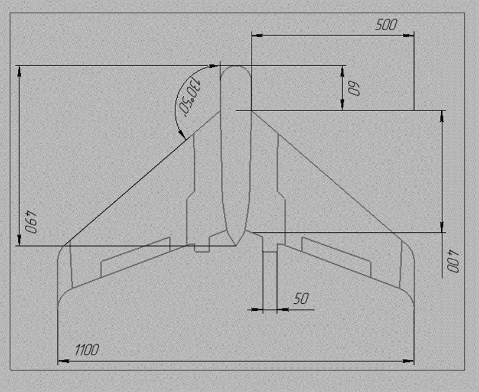

Projects Gallery
-
Powerball Lottery JavaScript
This application simulates the process of playing the Powerball Lottery. It allows to feel the thrill of the lottery without spending money. Thus, anyone can test their luck without any risk. The main goal of it is to show how almost impossible it is to win the Powerball Lottery and let people play it without wasting money and without risking their lives (without risk to be left with nothing). So, it solves the problem of spending too much money on lotteries.

-
Digital Wallet Application
An application (web-based) designed to help users manage their finances efficiently. The app allows users to track income and expenses, view currency exchange rates, and manage a list of recent transactions.
-
Powerball Lottery Python
This was a project to create flowcharts, describe and edit the existing Powerball Lottery code.

-
Wildlife Animal Monitoring Drone (overview)
My group selected a UAV suitable for the purpose, studied its characteristics, calculated the final cost (taking into account the replacement of some parts and the addition of new ones). Thus, we created a UAV model that is most suitable for monitoring animals in the wild to reduce the risk of threat and assist the security system.